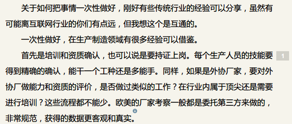
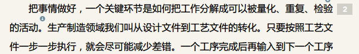

笔 记
Jeff Dean, 中文好难
很多人都可以绘声绘色地讲述自己的故事，或是与自己有关的那些亲爱者的故事。习惯的说法是，每个人都能够写一本精彩的书，至于称之为回忆录还是小说，也许只是个人的偏好。但一个小说家之为小说家，是需要一本接一本不断写下去的，于是常见的情形是，很多写小说的人都在担心经验贫乏，且抱怨生活的平淡逼仄。在我看来，对于有这样担心和抱怨的写作者，最好的解决办法不是出国旅行、下乡采风或期盼一场大战乱的降临，而是放弃写小说这件事。“对作家来说，”毛姆讲，“在茶馆里瞥见某人或是在轮船的吸烟室里和某人聊上一刻钟往往就足够了。他所需要的全部就是那薄薄的然而肥沃的土层，使他可以在其上用自己的生活经历、对人性的认识和天真的本能进行建造。”



笔 记
Linus, I'm your God!
《神雕侠侣》是金庸作品集之一。其主人公杨过自然而然地走上了非正统的人生道路，入了“道流”。其特点是“至情至性，实现自我”，即把个人的利益、情感、个性及人格尊严置于人生首位，作为首要目标，亦作为待人处事，评价是非的首要原则。

问 答